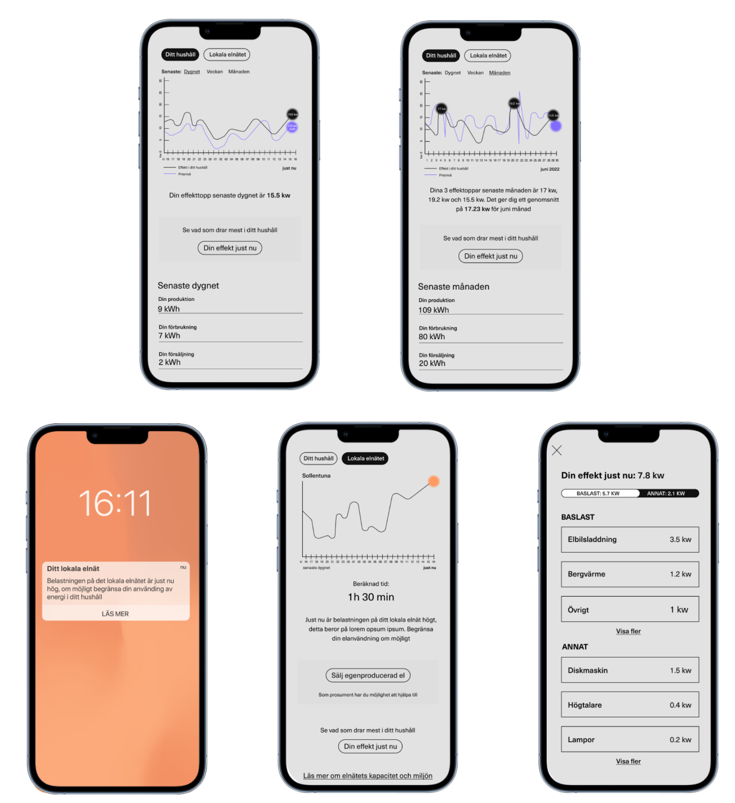

Sustainable Energy Use
YEAR: 2021-22
ORG: KTH
ROLE: UX Designer / Research Engineer
Stockholm, SWE

Designing Our Relationship with Energy
This project explored how user-centered design can support households in navigating new energy pricing models, particularly power-based tariffs and real-time electricity feedback. The work was carried out as part of a research collaboration with KTH, Uppsala University, Ellevio, Bright Energy and Ngenic - funded by the Swedish Energy Agency.
As electricity systems become increasingly strained by electrification, flexibility is often treated as a technical issue. This project reframed it as a design and perception problem, asking how people understand energy, power, cost, and climate impact in daily life - and what kinds of feedback actually support meaningful suistanable action.
Using user-centered and qualitative methods, conducting interviews, workshops and usability tests with both electricity consumers and prosumers (households with solar panels). Based on these insights, we developed and tested multiple design concepts for real-time energy feedback, including digital interfaces and ambient, physical visualisations.

DESIGN PROCESS
My contribution focused on user research, facilitating workshops, concept development and gathering user insights - helping translate energy systems into solutions that considers everyday life contexts - rather than fighting them.
USER INSIGHTS
→ Households are primarily motivated by economic effects, while climate impact is often perceived more as a positive 'side effect'.
→ Broken down real-time feedback (showing how specific activities and appliances affect usage) has the strongest effects on behaviour.
→ The distinction between energy (kWh) and power (kW) is poorly understood and requires careful design to avoid misinterpretation.
→ Comparisons work best when based on a household’s own historical data, rather than comparisons with other households.
→ Feedback must be personal, coordinated and actionable to be effective.
Based on these insights, I developed concepts to meet the needs and behaviours of the two groups: prosumers and consumers. This resulted in prototypes that were tested on the user group.
[PROTOTYPE 1]

[PROTOTYPE 2]

The project contributes practical design insights to the transition toward a more flexible and resilient energy system, shifting the focus from infrastructure to how people actually experience and engage with energy.